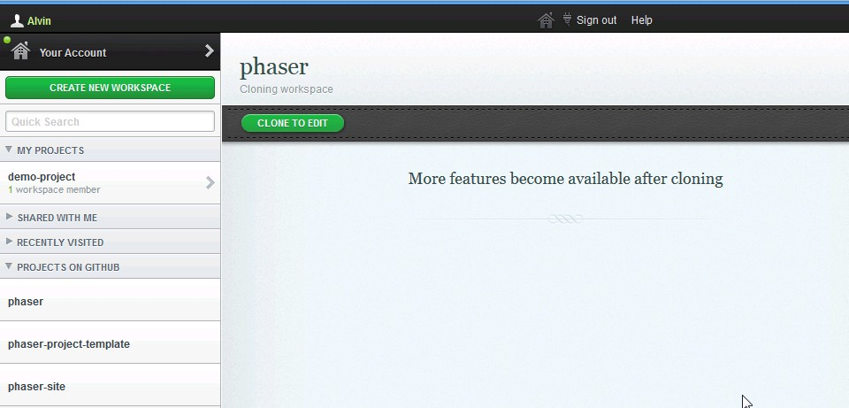
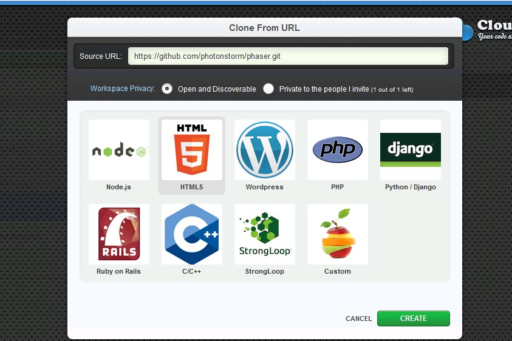
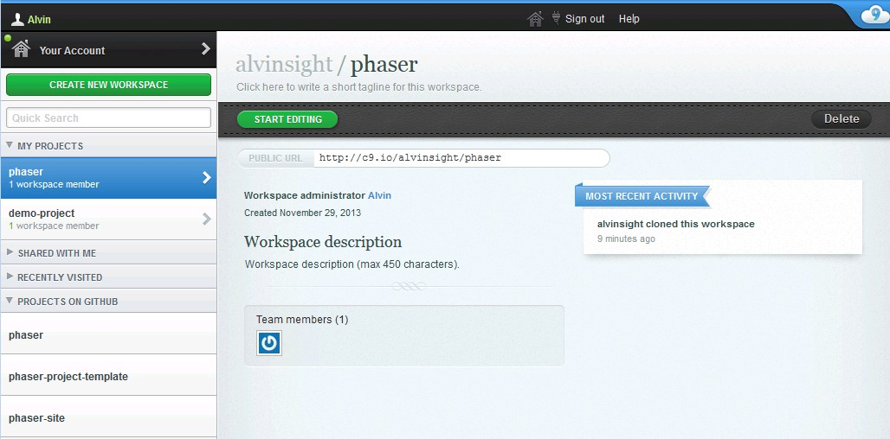

If you're not comfortable with github cloning, and setting up a web server, or if you don't want to bother with all that, you can run phaser in the Cloud.
More than a marketing buzzword, the Cloud is often used by developers as tool which allows you to create, edit and share your content without having to install anything, or make the people you share your content with do so.
There are several JavaScript online collaboration tools such as JSBin, codepen and JSFiddle just to name a few of them.
There is another tool that we recommend which is called Cloud9 IDE that allows you get up and running very quickly.
First, sign up to the website using GitHub, and once this is completed, you will be redirected to your dashboard.
From this dashboard, you can create private or shared project, or, the feature that interests us in this case, you can create a project from a GitHub repository.
Click the "create workspace" button and select the "clone from URL" option from the drop-down menu.
Once the repository is integrated into c9.io, you'll see this window:
When you click on the "start editing" button you'll be redirected here:

You have now a copy of the Phaser repository.